Lights, Camera, Render
Note: Model of cat statue used throughout these notes was made by Riley Queen with guidance from Rico Cilliers. Accessed through CC0 License on Poly Haven: Link
Cameras
When setting up our scene for rendering and image, the first thing we want to do is to create a camera that we will use to render. It is often best to use a “Camera and Aim” object. This will create a camera that we can use to produce a render as well as an aim box that we move to control where the camera is aiming.
To create camera:
- Navigate to Create > Cameras > Camera and Aim.
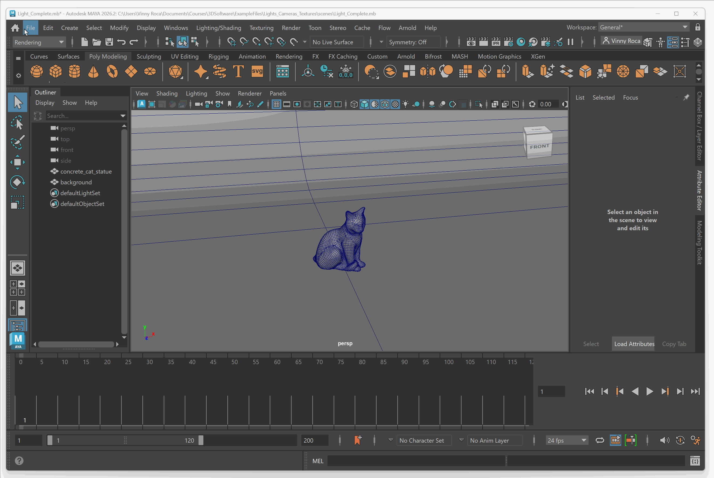
To display camera:
- Navigate to Panels (in Viewport) > Layouts > Two Panes Side by Side
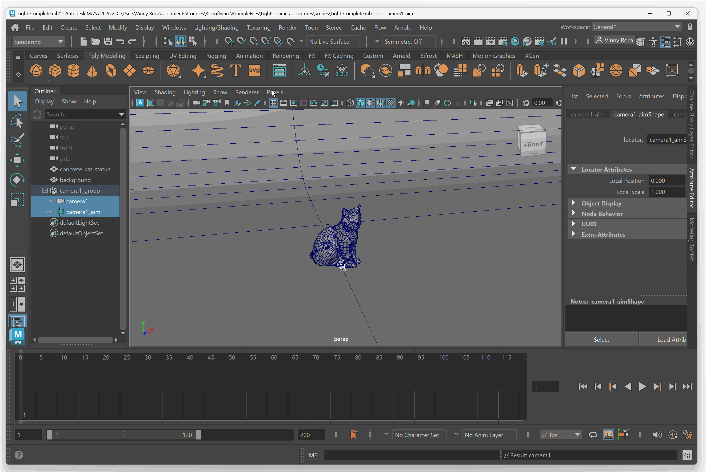
- In one of the viewports: navigate to Panels > Perspective > Camera1
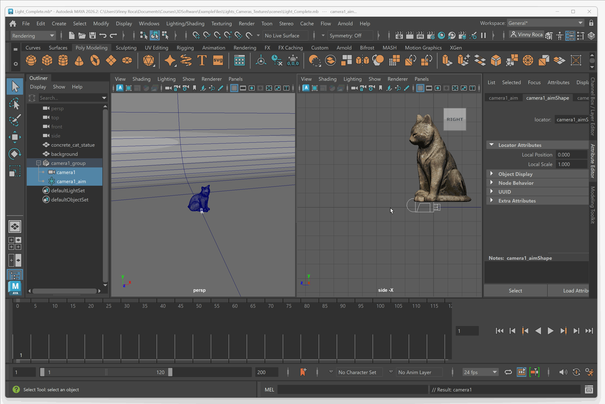
- In the same viewport navigate to View > Camera Settings > Resolution Gate
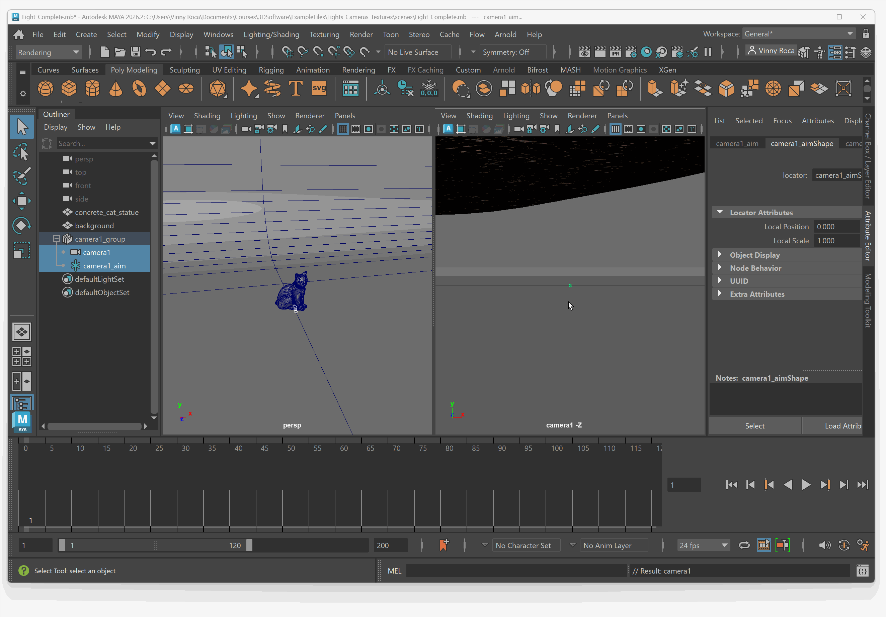
- In the same viewport navigate to View > Camera Settings > Overscan
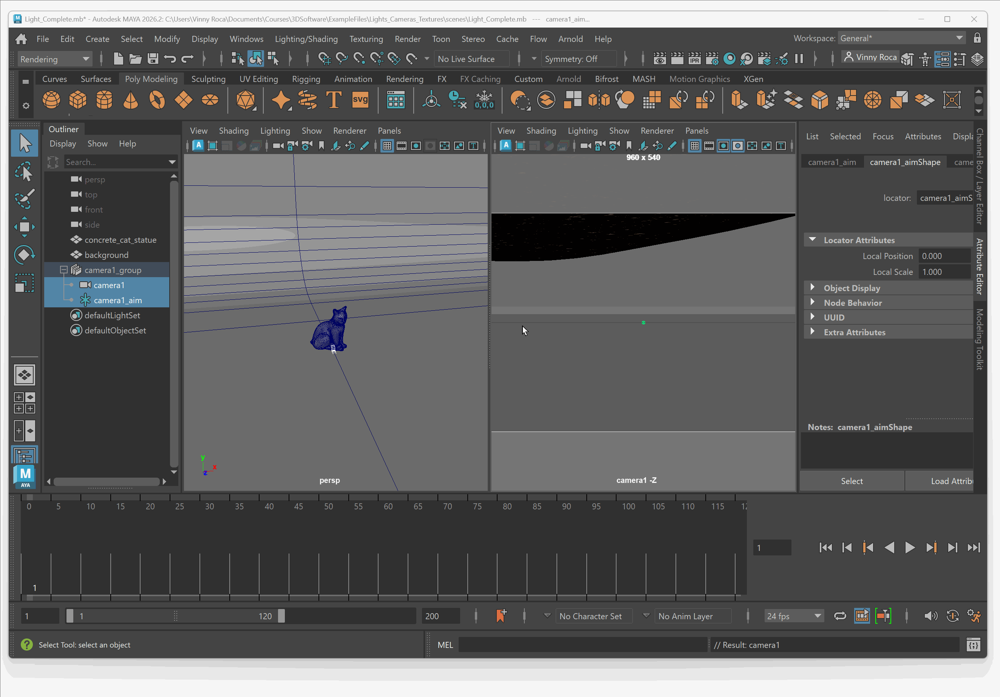
To position camera:
- In your Outliner, press the plus button next to your newly created camera group
- Select your camera_aim object and move it to where you want your camera to aim
- Select your camera object and position the camera
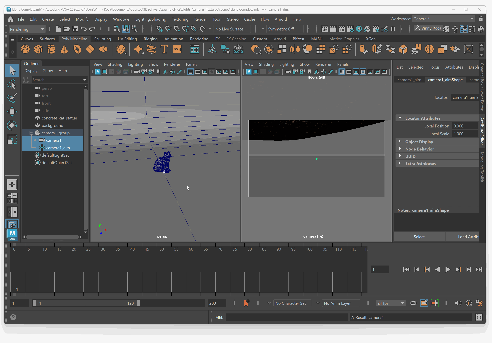
Just like a real world camera, our virtual camera within maya has various settings that we can adjust to get different visual results. The most common setting to adjust is the Focal Length of your camera. The focal length will change the field of view of your image. A smaller focal length will create a larger field of view, while a large focal length will create a small field of view. Some common focal lengths that are used in film and photographs include 17, 35, 50, and 85.
To change your focal length of your camera:
- Navigate to your camera object
- In the cameraShape tab of the Attribute editor, locate the Focal Length slider under Camera Attributes.
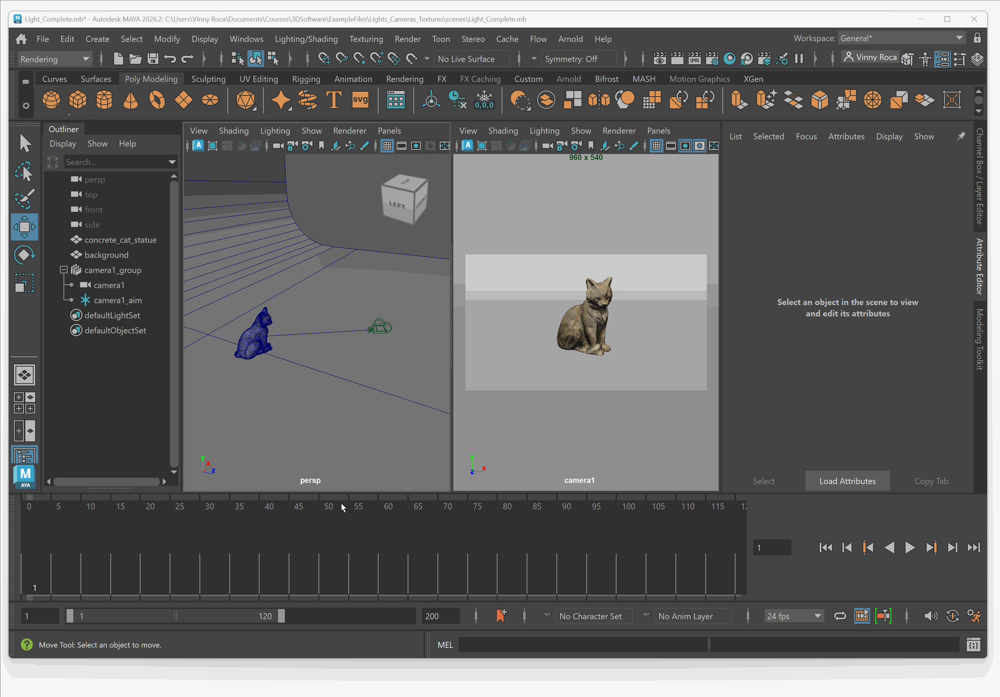
Area Light
Within Arnold, we have a variety of different lights we can use to light our object.
The most common lights are Area Light and Physical Sky Light
An area light in Arnold is a generic light that can take the form of a plane, disc or cylinder. This is an all around studio light that can be used to create a variety of different lighting effects. The light works similarly to a light you might see on a movie set or in a photography studio.
**To create an area light: **
- In the top tool bar, navigate to Arnold > Lights > Area Lights
- Move and rotate your light to point at your object (the small line represents the direction the light is facing.)
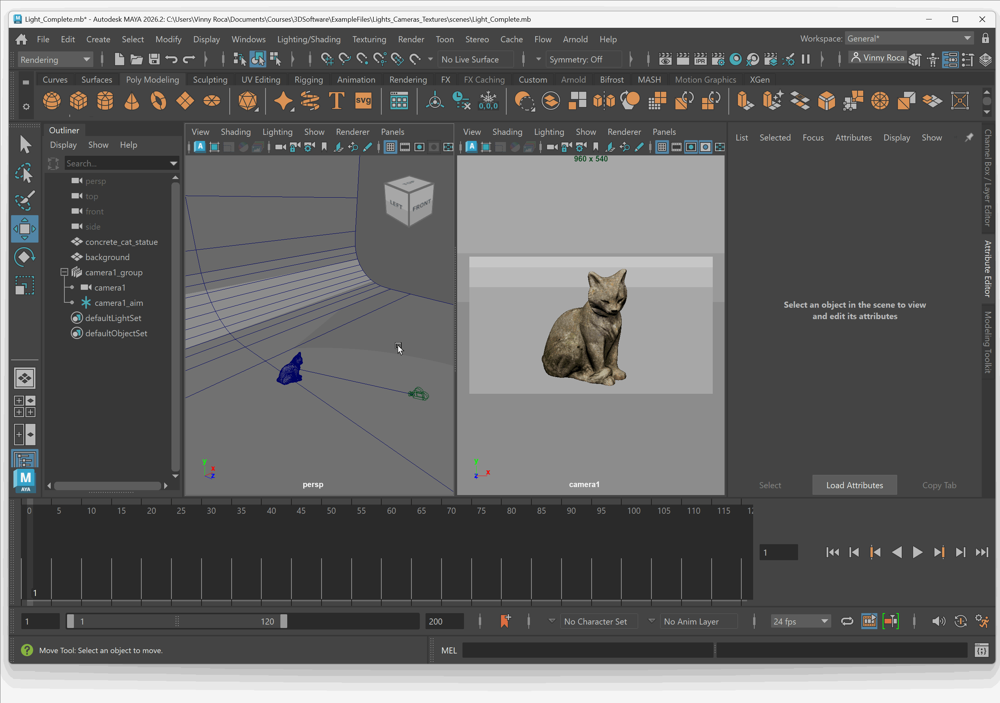
To create a test render:
- Press the Arnold RenderView button in your tool bar
- Press play
You may notice that your render is far too dark. To adjust the brightness of our light, we need to change its attributes.
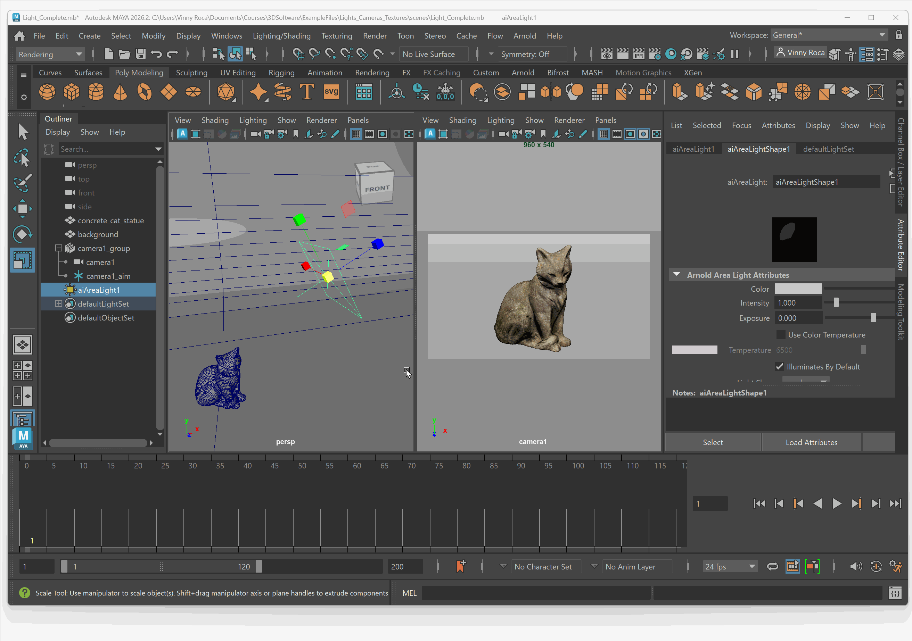
Exposure
To access exposure: Attribute Editor> aiAreaLightShape > Exposure
This is the main control for the brightness of the Area light. The exposure parameter works like an f-stop parameter on a physical camera. Each whole number represents a on stop increase in the exposure of the light.
Exposure = 6:
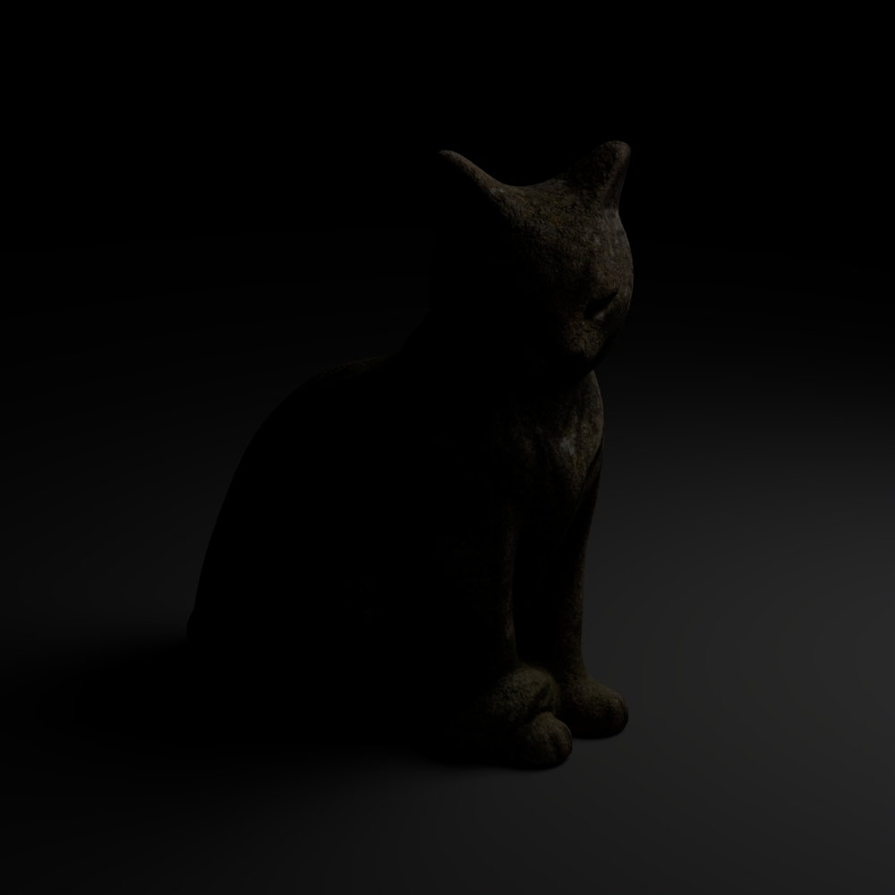
Exposure = 12:
Scale
Although not a settings within the attribute editor, scale is one of the most powerful attributes of the area light:
- Small area light = harder shadows
- Large area light = soft shadows
Scale = .5
Scale = 5
Color
To access color: Attribute Editor> aiAreaLightShape > Color
This alters the color of the light. This attribute works like colored gels on a real world light source.
Image with blue and orange colored lights:
Samples
To access samples: Attribute Editor> aiAreaLightShape > Samples
This setting alters how many samples the light is taking to produce a rendered image. Typically, a good sample amount is 2-4.
Three Point Lighting
When lighting objects in Maya, or in real life, it is common to use a three point light set up. This lighting set up uses three lights to light an subject:
- A key light: the main light on the subject
- A fill light: a light to fill in the shadows opposite the key light
- A rim light or edge light: positioned behind the object to light the edges of the object
Example three point lighting set up in Maya:
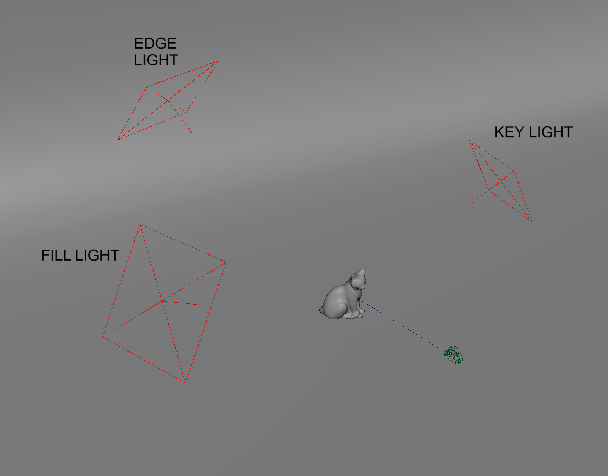
Key, fill and edge light:
Only key light:
Only fill light:
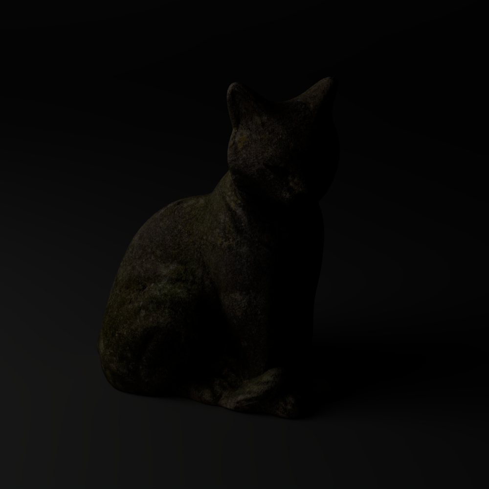
Only edge light:
Physical Sky
The Arnold Physical Sky light mimics a real sun and sky environment.
To create a Physical Sky light:
Navigate to Arnold > Lights > Physical Sky
Physical Sky settings
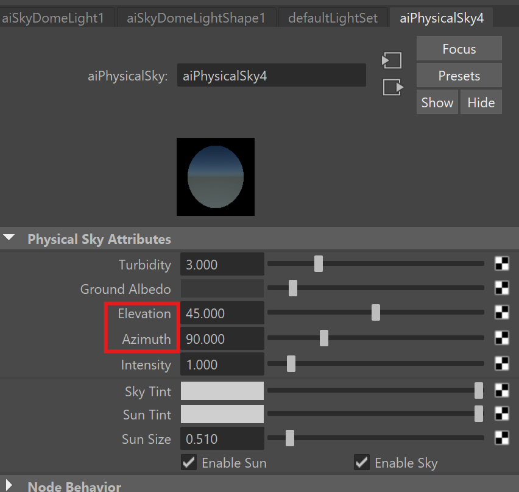
In Attribute Editor > aiSkyDomeLightShape:
Exposure: Adjust the brightness of Sun and Sky Samples: Adjust the resolution of light (generally set to 2)
In Attribe Editor > aiPhysicalSky:
- Azimuth: Rotation of the Sun
- Elevation: Height of the Sun
Elevation at 2.5, Golden Hour:
Elevation at 60, Mid-day:
Render Settings
Compared to other render engines, Arnold has a very simple set of settings that are easy to use.
To open the render settings:
- In your tool bar, click on the Render Setting icon (clapper board with gear)
- Navigate to the Common tab
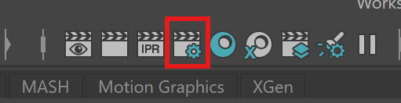
File Name and Format
To change the name of your render, change the name under “File name prefix:”
To change your image output format, change the “Image format:” setting.
If you have experience editing .exr files in Photoshop you can use that format as it stores the most data. If you do not have .exr editing experience, use png format.
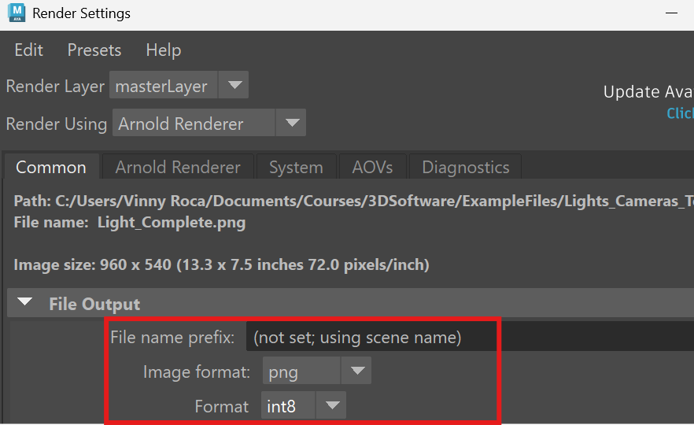
Frame/Animation
For our current project, we are only rendering single frames. Under “Frame/Animation ext:” make sure the value is set to “name.ext (Single Frame)”. The “Frame Range” section should be grayed out.
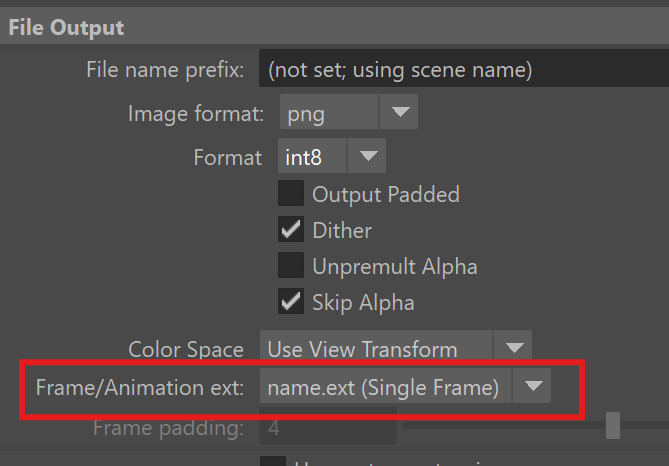
Renderable Cameras
Make sure the Renderable Camera is set to the camera you are using in your scene (i.e. camera1).
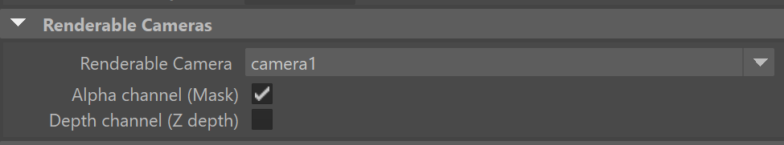
Image Size
Image size allows us to set the resolution of our images. By default, there are a variety of presets for stills and animation. Oftentimes, however, you will set a custom resolution by changing the width and height parameters.
Best resolution varies greatly depending on the output:
- For print you typically want 300 pixels per inch of your print. For example, an 8 in by 10 in print would need an image resolution of 2400 pixels by 3000 pixels.
- For Animation, aspect ratios and resolutions vary widely depending on your intended results. A 16:9 aspect ratio is standard with full High Definition having 1920 by 1080 pixels and 4k resolution having 3840 by 2160 pixels.
- For the web, resolution varies greatly. Typically you want to stay in with a HD or 2K resolution.
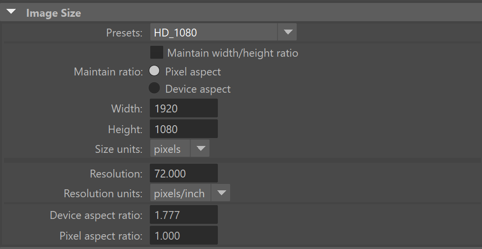
1920 by 1080 image:
3840 by 2160 image: (Open in new tab to see full resolution)

CPU vs GPU
Navigate to the System Tab.
By default, Maya will use your CPU or Central Processing Unit to render images. For a long time, this was the fastest way to render images. Recently, advancements in GPU or Graphics Processing Unit technology have become much faster at rendering.
To switch to GPU rendering:
- Navigate to Render Device under Device Selection
- Change from CPU to GPU
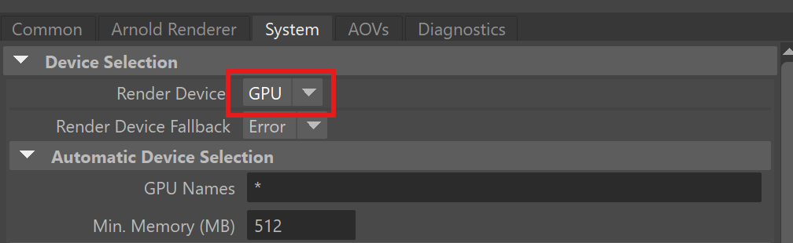
Arnold Render Settings
With GPU rendering activated, there is only one setting we need to change to increase the quality of our renders, Camera AA. A good value for Camera AA for all renders is 6. A high number of Camera AA samples will produce a less noisy image.
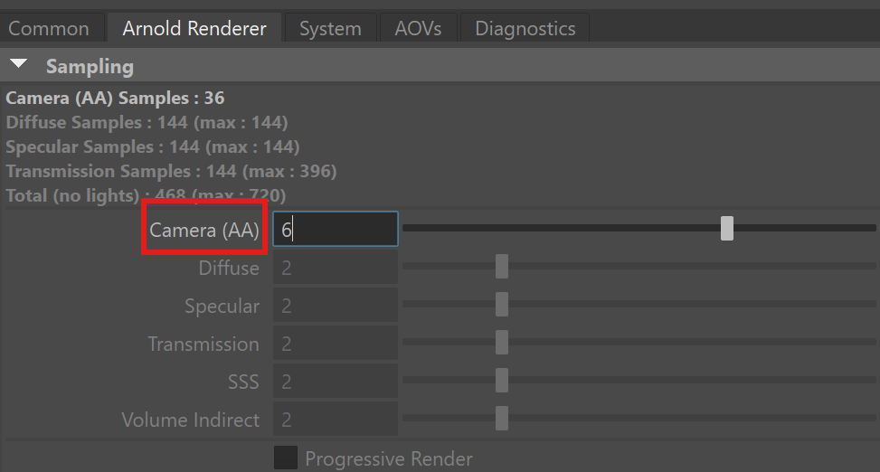
Samples = 1:
Samples = 6:
Samples = 10:
Rendering Images
We can preview our renders by using the Arnold RenderView. This will show an IPR render, or in progress render, which is great for placing lights in our scene.
To render a full and final image:
- Navigate to your tool bar at the top of your UI
- Navigate to Render > Render Sequence
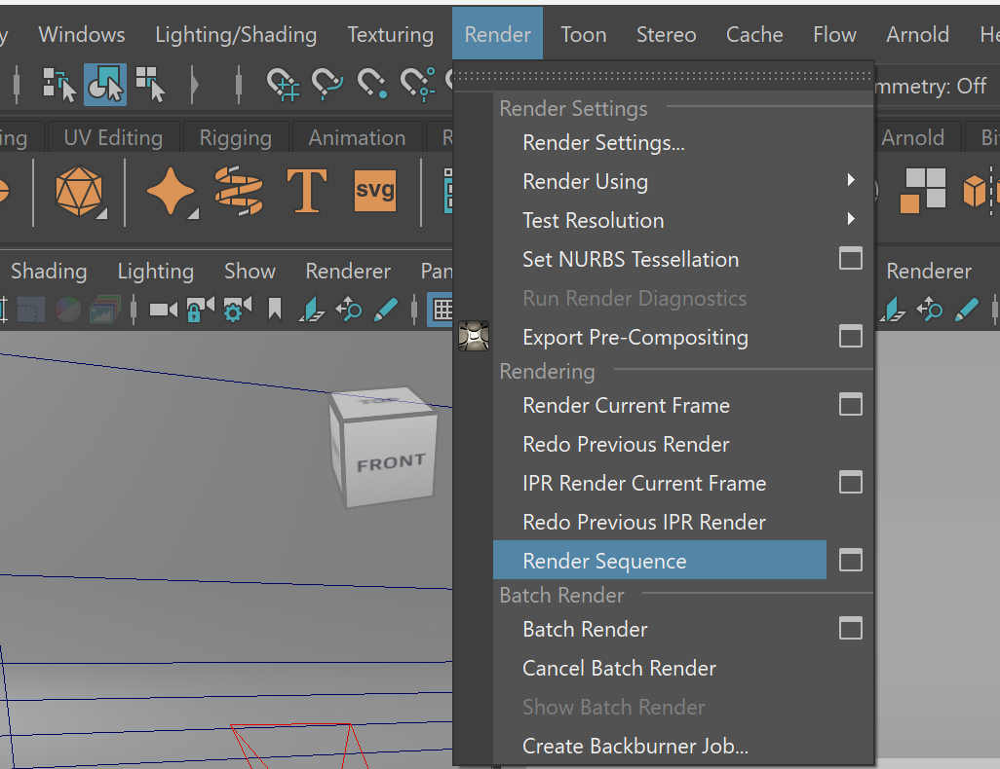
This will render your full sequence which, in our case, is only one image. This image will save to your image folder within your Maya project folder.
Depth of Field
Depth of Field creates the effect in which some parts of our image appear in focus while other parts appear out of focus.
To turn on depth of field:
- Navigate to your render camera
- Navigate to Attribute Editor > cameraShape> Arnold
- Check Enable DOF
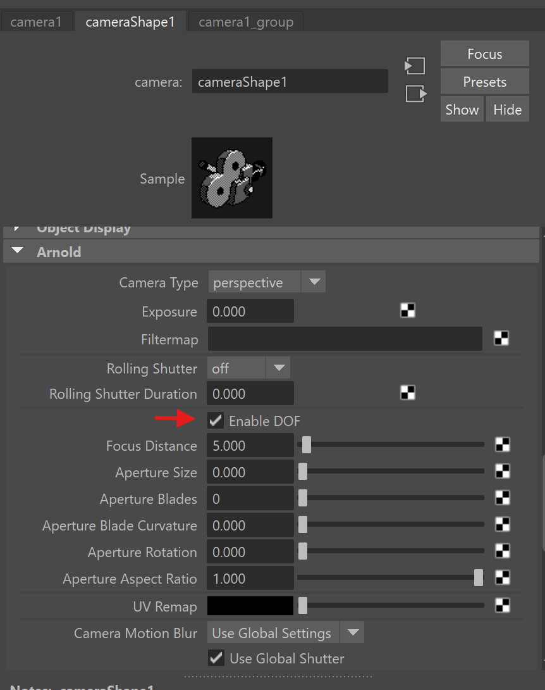
In order to use depth of field properly, we need to know have far the object we want to focus on is from our camera.
To see the distance between an object and our camera:
- Navigate to display>heads up display> object details
- In your render camera view port click on the object you want to find the distance from
- Make note of the number “Distance From Camera” in the upper right corner of your viewport.
- Replace the Focus Distance parameter of your render camera’s depth of field settings with this number.
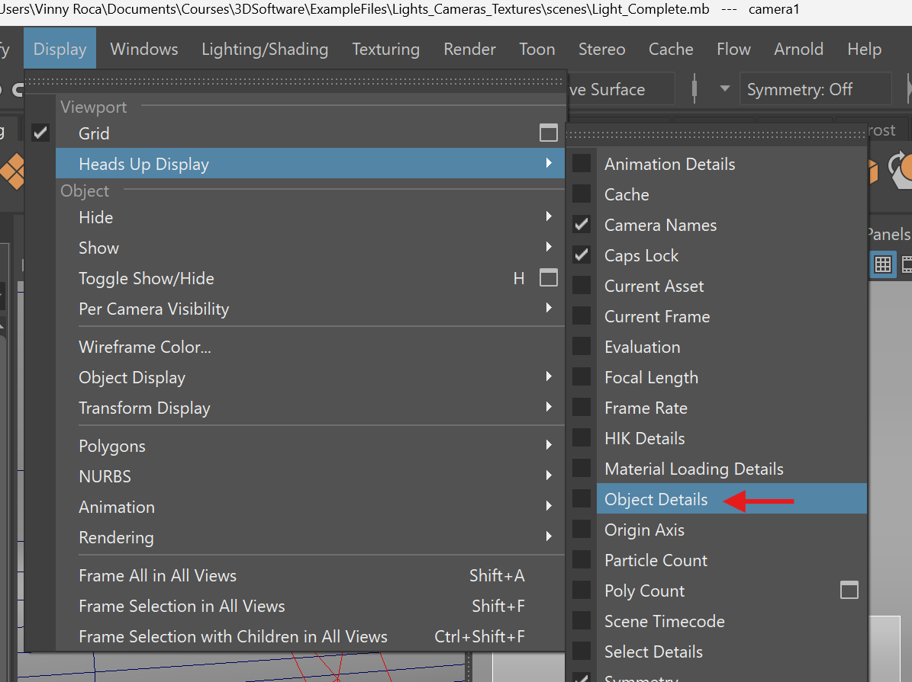
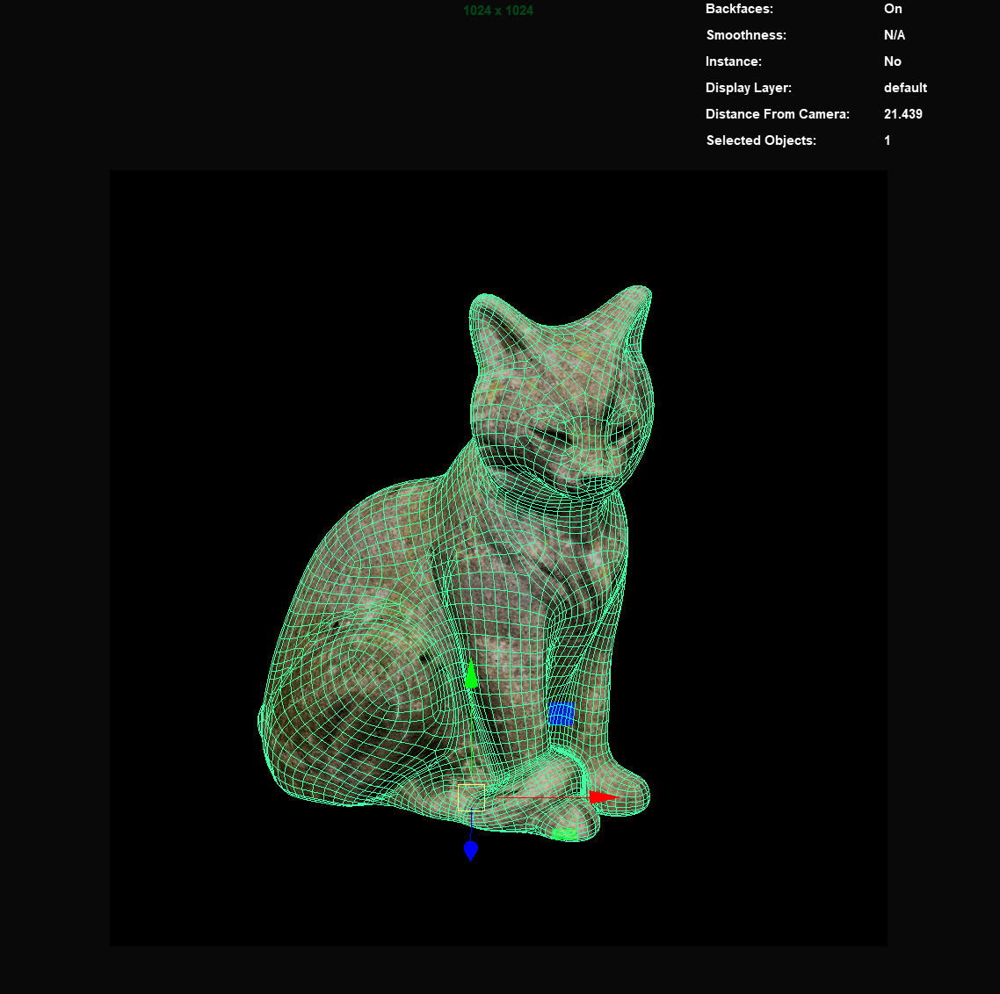
You can adjust the focus effect of your depth of field by changing the Aperture Size setting. A size between .1 to .5 often works well.
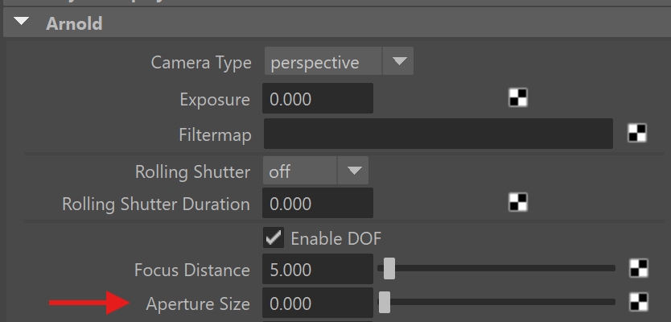
Aperture Size = .5:
Aperture Size = .3:
Textures
When creating rendered images in Maya, not all of our textures need to come from Substance Painter. Particularly when objects are made out of basic materials such as wood or stone, it is often better to use textures from a texture library.
There are many free libraries online that you can access. Polyhaven, in particular, is an amazing resource for textures, models, as well as HDRIs.
So have 3D artists always been using premade textures? While many games and films use hand painted textures, throughout the history of 3D software, artists have been using image collections to make textures. Before the ability to easily purchase and share these textures online, collections of images on physical media such as CDs would be purchased by studios and artists for texturing.
Looking at a texture ripped from the game Silent Hill, we can see that this texture was hand painted by an artist. This texture was downloaded from Texture Resource https://textures.spriters-resource.com/, a community dedicated to sharing and preserving textures from new and old video games.
Looking, instead, at this example captured from Super Mario 64, we can see that the artist modified a preexisting image to create the texture for the flower field. This research was done by Roovahlees, who has been researching where many of the textures in video games from the 1990’s originate from.
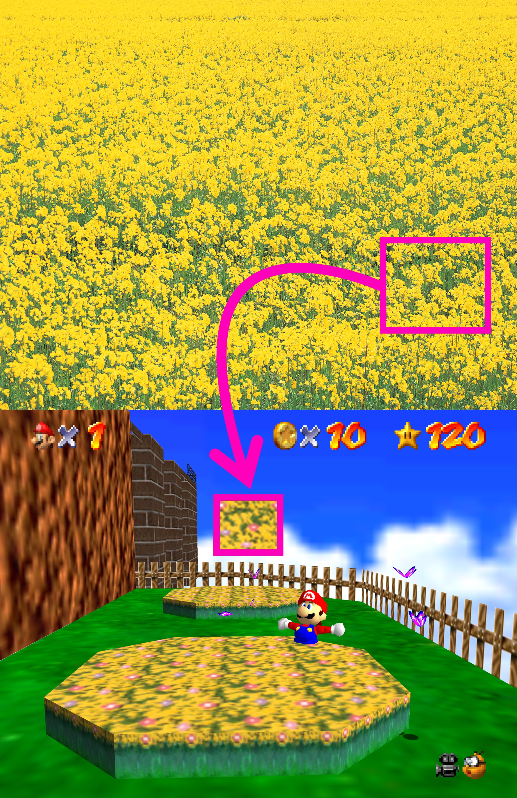
In addition to this research, they have also been cataloging many original texture CDs on archive.org. The Render96 Wiki is another great resource in which community members are tracking down the original textures used in Super Mario 64 and related games.
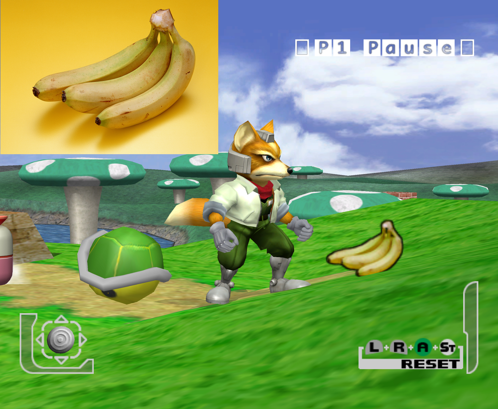
(Texture from Super Smash Bros. - Render96 X account)
Importing Textures
To import textures into Maya, we first need to download textures from an online resource. We can download a basic Wood Planks texture from Poly Haven.
Using the download menu on the right, I can download a Diffuse (color Map), a roughness map, and a normal (gl) map. We will discuss displacement maps in our next section on ZBrush.
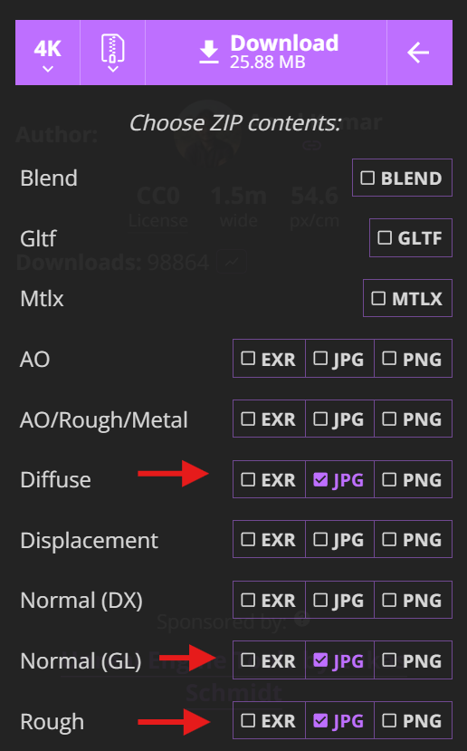
Download the images as a zip file, unzip the folder, and move the images to the Source Images folder of your Maya project.
To create a material from these images, we can use the Substance Plugin:
- In your top menu bar, navigate to Substance > Apply Workflow to Maps
- Individually select the baseColor (diffuse), normal, and roughness maps.
- Press “Apply”
- Rename the material in Hypershade and apply it to your object.
Importing Model
Poly Haven is also a great resource for creative commons models.
To download a model:
- Change download type to fbx
- Download zip file
- Unzip file
- Import the model in your scene using File > Import
To make a proper pbr texture, use the substance plugin:
- In your top menu bar, navigate to Substance > Apply Workflow to Maps
- Individually select the baseColor (diffuse), normal, and roughness maps.
- Press “Apply”
- Rename the material in Hypershade and apply it to your imported model.
Other great resources for creative commons models include:
Be sure to check the licensing agreement for the model before using it in your scene.